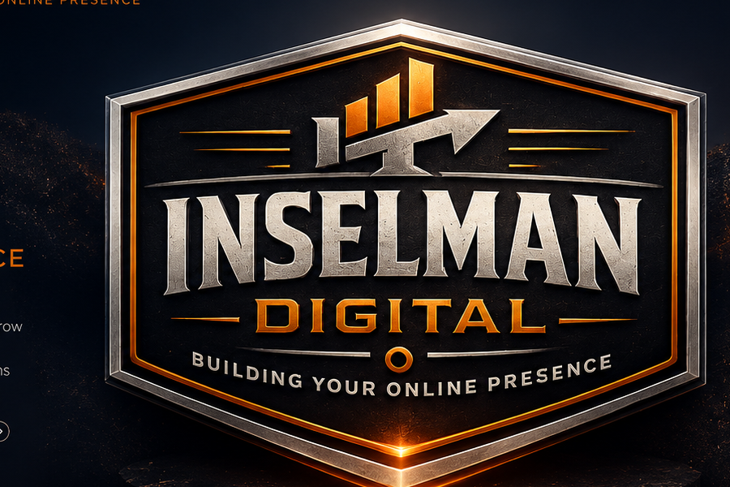

Flagship field platform
Cattle Handler™
A custom cattle management system built around a working operation: treatments, pens, medicine tracking, reporting, roles, health workflow and shared cloud data.
Explore Cattle Handler →

Built in Ardmore · Built for real work
Custom software, internal tools, web apps and websites built around the way real businesses actually operate — from service companies and local businesses to field operations and ranch technology.
Today at a glance
CRM, operations, reporting, inventory, field entry and internal tools.
Professional websites and customer-facing systems that match the operation behind them.
Real tools · real use
Cattle Handler is the flagship field platform, but it is not the whole company. Inselman Digital also builds operating software for service businesses, internal workflow tools, websites, and custom systems for businesses with very different problems.
A custom cattle management system built around a working operation: treatments, pens, medicine tracking, reporting, roles, health workflow and shared cloud data.
Explore Cattle Handler →A working internal system for customer lookup, scheduling, follow-ups, invoices and operating records — built because generic tools did not match the way the business actually worked.
Internal operating system
Professional websites with clear customer paths, local visibility, mobile performance and a brand that looks as credible as the business behind it.
Dashboards, record systems, reporting tools, portals and automation for businesses that need something more specific than off-the-shelf software.
What we build
The niche is not “cattle software.” The niche is building useful technology close to the people doing the work — especially when generic software keeps getting in the way.
CRM, operations, inventory, dashboards, records, reporting, permissions and cloud workflows built specifically for your business.
Cleaner entry screens, shared data, reminders, reports and automation that remove repetitive work instead of adding complexity.
Fast, polished, mobile-first websites for businesses that need a stronger public face and better customer paths.
Experimental tools, sensor workflows and research-oriented systems where software has to meet the physical world.

Founder-led · built different
Inselman Digital grew from solving real operating problems in my own business, then applying the same approach to other businesses that needed software built closer to the work.
You work directly with me from the first conversation through the build and refinement. No sales handoff, no layers, and no pretending complexity is sophistication. The goal is sharp software that earns its place in the workday.
Ardmore, Oklahoma
“The software should feel obvious to the person using it — even when the system behind it is doing something complicated.”
A different approach
Start with the problem. Learn the workflow. Build only what earns its place. Then let real use show what needs to get better.
What gets missed, entered twice, buried in paper or forced into a tool that does not fit?
Keep the surface simple. Put complexity behind the scenes where it belongs.
Mobile, desktop, cloud, reports, permissions and workflow only where the job actually needs them.
Real use exposes friction. That feedback becomes the next improvement.
Ready to build something that works?
You do not need a technical specification. Tell me what you run, where the friction is, and what you wish the software would do. That is enough to start.
Start a project
Call, text, or email. Tell me what you run, what is slowing it down, and what you wish worked better.